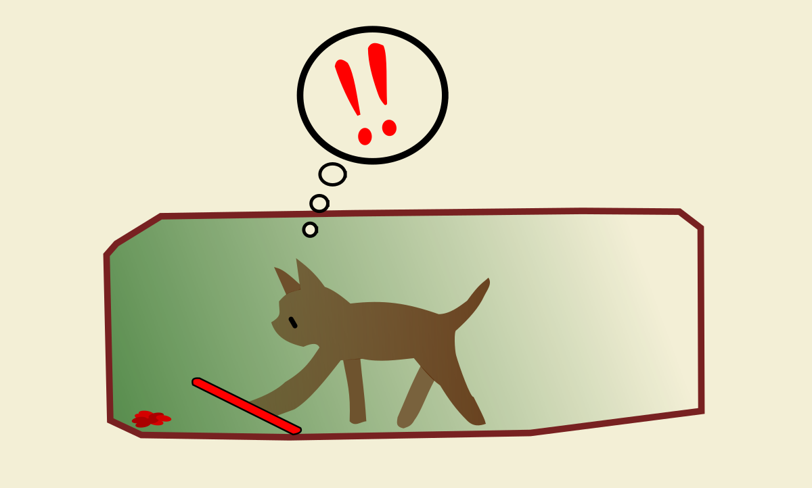
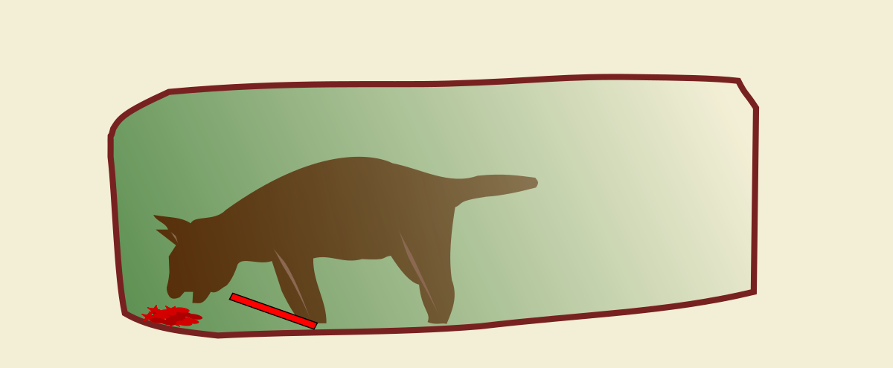
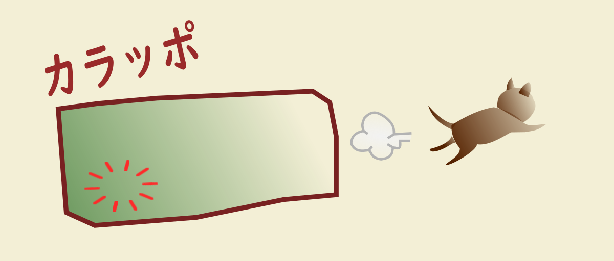
警戒心が強く、捕獲器の踏板を踏まない猫がいます。
エサだけ食べられてしまう事をふせぐ工夫をご紹介します。
◇ まずは足元の踏板を隠す所からです。
新聞紙やプラスチック板、段ボールなどを敷いて踏板を隠し、違和感をなくします。
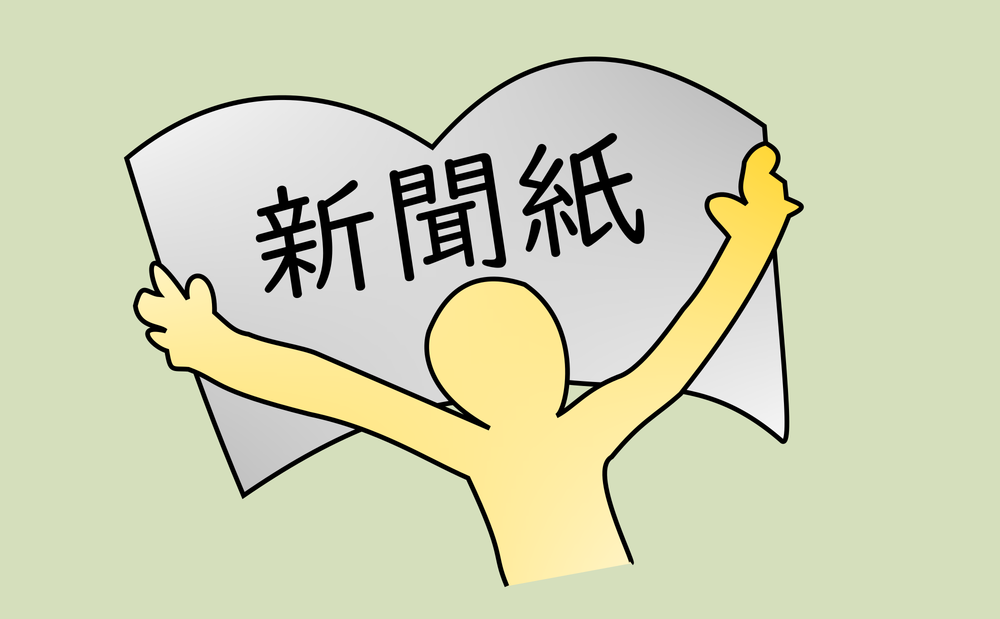
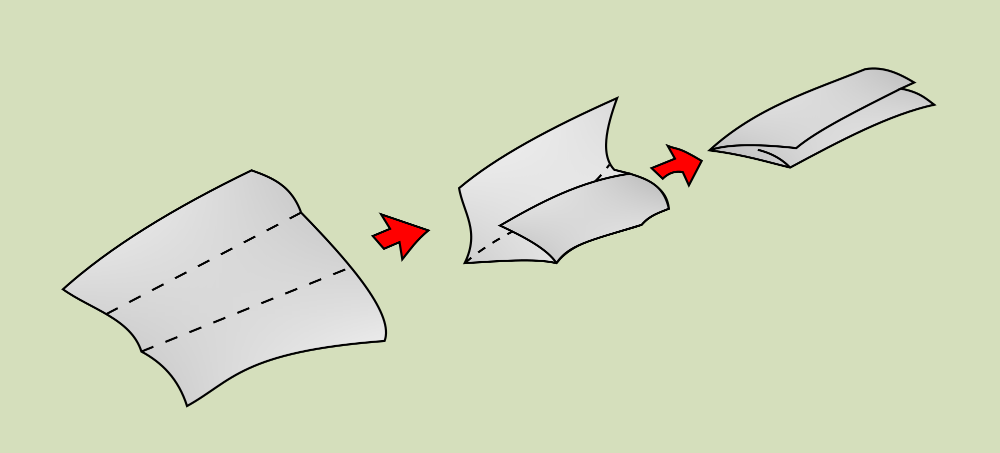
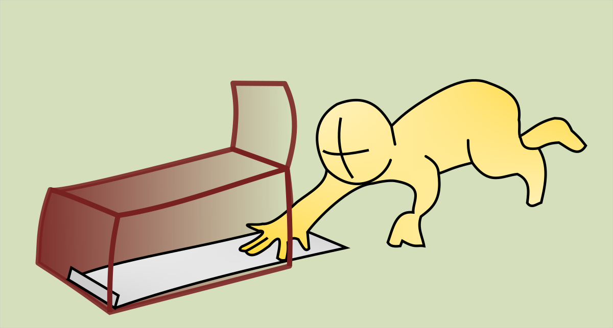
◇ 次に捕獲器内のエサを、左右に広く分散させます。
猫が左右に広がったエサを食べようとしている内に踏板を踏んでくれるかもしれません。
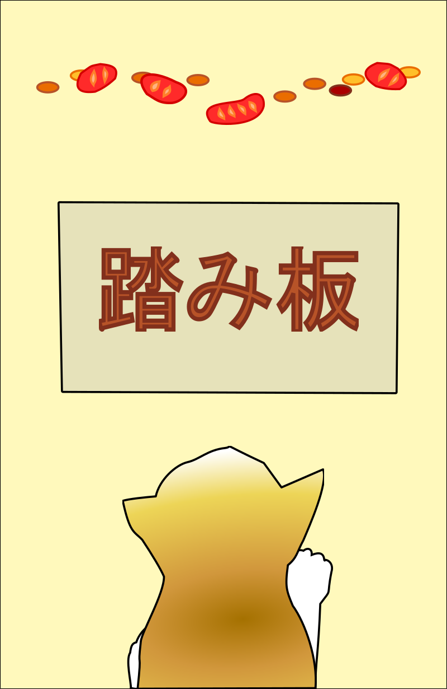
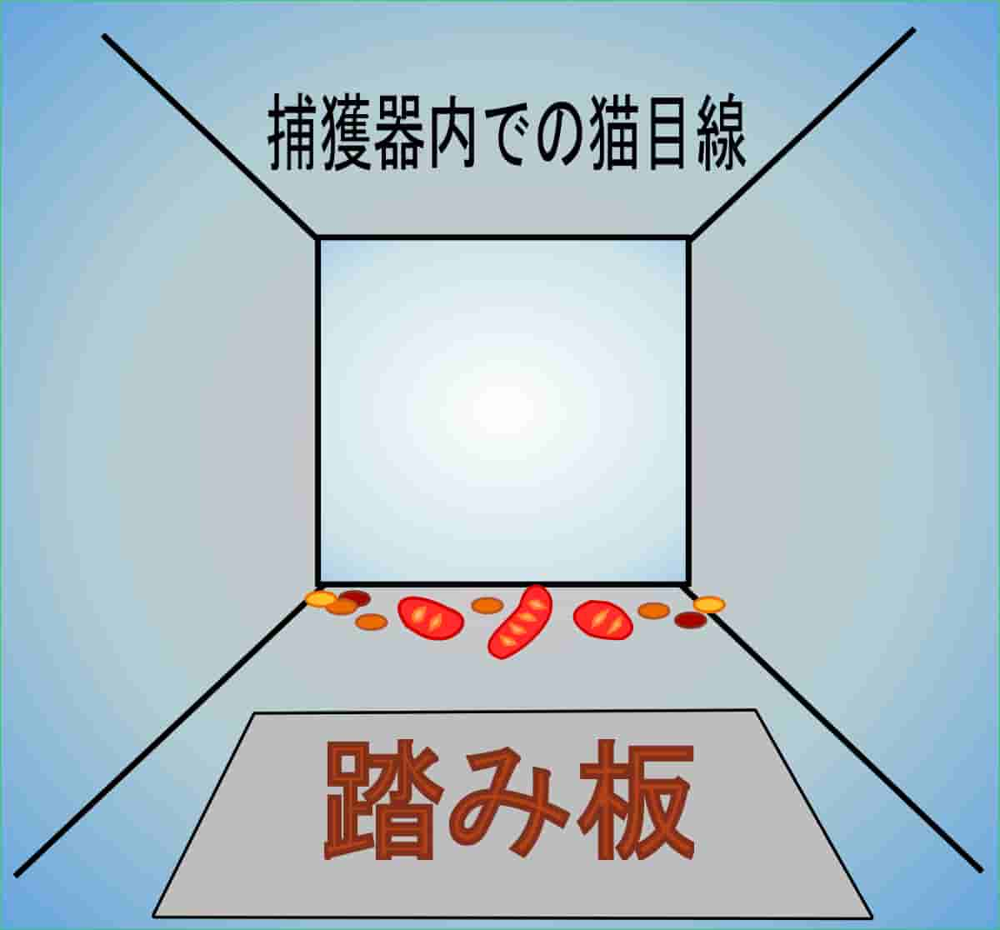
ちょっとした工夫ですが、これでうまくいったらラッキーです。
◇ 他にも吊り餌式捕獲器で足元から注意力を逸らすという方法もあります。
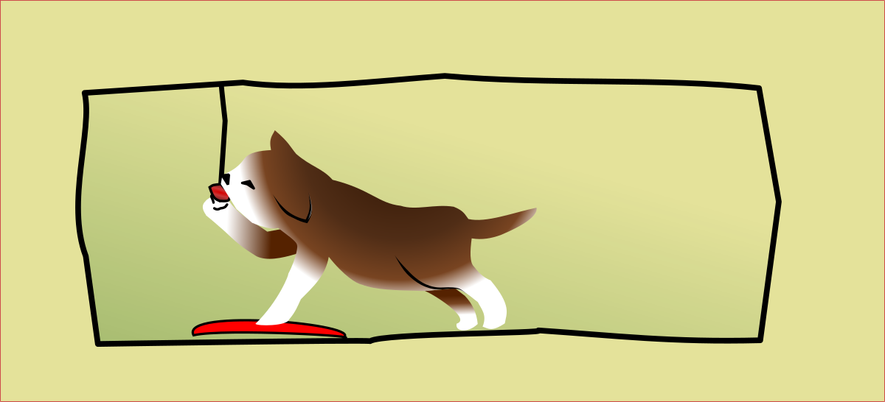
※ 吊り餌式の捕獲器は、捕獲器内で暴れた際に猫を痛める可能性があるため、捕獲後は内壁側に括り付けてご使用下さい。
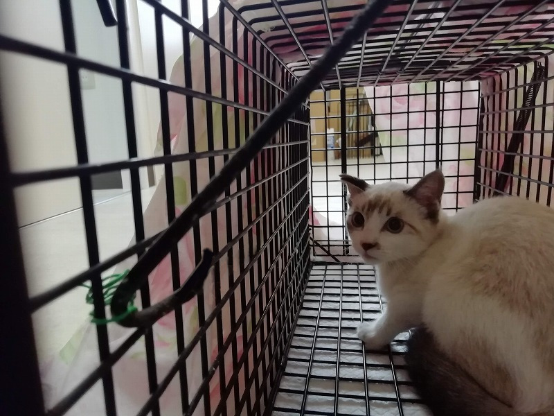
◇ 捕獲器とつっかえ棒
捕獲器の扉につっかえ棒を設置し猫が入った所を見計らって捕まえる方法もあります。
つっかえ棒はなんでも良いですが水の入ったペットボトルが安定してお勧めです。
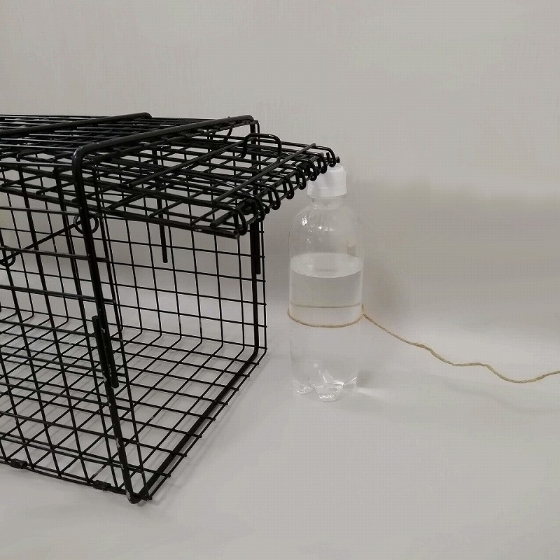
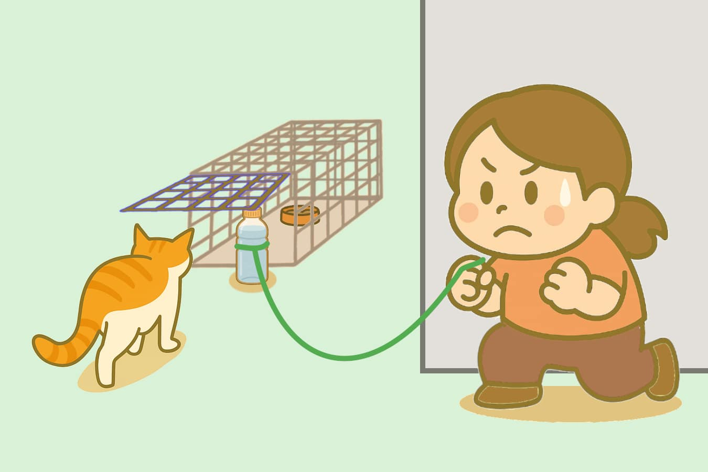
本番で肝心な時に扉がひっかかって降りない！という事が無い様に、ちゃんと扉が閉まるか練習してみて下さい。